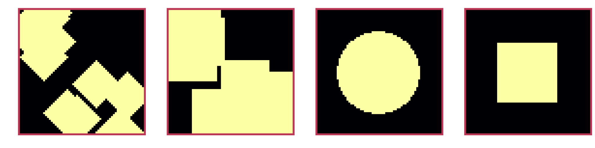

A Multi-grid method
on the Cahn-Hilliard equation and its relaxed variation.
This Thesis gives a short overview and derivation for the Cahn-Hilliard Equation. It uses a discretization by the authors (Shin, Jeong, and Kim 2011) as baseline, and expands upon this dicretisation with an elliptical relaxation approach. It introduces evaluation metrics regarding stability in time, space and during sub-iteration. And compares the elliptical approach against the baseline. Furthermore, it shows a qualitative success of the elliptical solver, however it also highlights challenges in numerical stability.
Table of Contents
- 1. Introduction
- 2. The Cahn-Hilliard equation
- 3. Discretization of the CH equation
- 4. Numerical solver
- 5. Numerical experiments
- 6. Relaxed Cahn-Hilliard equation
- 7. Discretization of the relaxed problem
- 8. Discrete mass conservation
- 9. Numerical experiments for the relaxed system
- 9.1. explicit and implicit solution of the elliptical problem
- 9.2. optimizer for alpha
- 9.3. effect of \( \alpha \) on the Gauss-Seidel iteration
- 9.4. Direct comparison of the baseline solver with the relaxed solver
- 9.5. Relaxed energy evaluations
- 9.6. Stability of a relaxed multigrid sub-iteration
- 9.7. Relaxed numerical mass balance
- 9.8. Relaxed stability in time
- 9.9. additional considerations
- 10. Conclusion
1. Introduction
The Cahn-Hilliard (CH) equation is a well known fourth order partial differential equation (PDE) used in multi-phase flow. It is used to couple different phases with a diffuse-interface. It does this using a continuous transition between two phases. The CH equation, beeing fourth order, is difficult to solve numerically. Howewer it is still used since it is able to guarantee conservation of mass. In this thesis we implement numerical solvers for the Cahn-Hilliard equation in the Julia programming language. We begin by giving an overview and a derivation for the analytical CH equation in Chapter 2. We then show mass conservation and a decrease of total energy in time. The Chapter 3 introduces our finite difference discretization. We explain the necessary functions, and give their implementation. Additionally we introduce the initial conditions we used in this thesis. Chapter 4 describes the relevant steps of our numerical implementation in the two-grid method we used. In Chapter 5 we evaluate this method’s stability,discrete mass conservation and discrete energy decrease that we have shown continuously for the analytical CH equation. Our thesis introduces a elliptical relaxation approach to the classical CH equation, where instead of solving a fourth order PDE 1, we solver a second order relaxed PDE and an additional elliptical PDE. In the chapter 6 we introduce this approach, and then derive a numerical solver using the method described in chapter 4.2. Hereupon we derive and implement the necessary functions for the discretized relaxed equation, and we introduce a simple solver for the elliptical PDE. Subsequently, in chapter 9, we evaluate our relaxed method against the baseline with the same measures, as introduced in chapter 5.
We began writing this thesis with a reproducible research philosophy in mind. Hence, we provide the explanation and the implementation in the same file. The original aim was to have the mathematical formulas and their implementation interleaved. While we fall short of this goal, we still provide all relevant code in the relevant sections and the appendix. All shown code is therefore the code that is run on our machine. Since not all parts of the code are relevant for understanding, unimportant sections are implemented elsewhere. Didactically they are replaced with a comment of form <<unimportant-code-section>>. Their implementation can be found in Thesis_jl.org in a code block of the same name.
We did experiment with additional tools such as org-mode that allow for scientific note-taking and literate programming.
This file is available on our github repository at https://github.com/ProceduralTree/CahnHilliardJulia.git
as Thesis_jl.org. The code to our numerical experiments we provide in the appendix as well as under experiments/src/ in the repository. We provide the code for the plots next to them in Thesis_jl.org. The code for the numerical solvers themselves is in both the PDF and the ORG Document, and gets exported into the src/ directory of the github repository.
2. The Cahn-Hilliard equation
The Cahn-Hilliard (CH) equation is a partial differential equation (PDE) that governs the dynamics of a two-phase fluid (Wu 2022). The form of the CH equation used in this thesis in the domain \( \Omega \times (0, T) \,, \Omega \subset \mathbb{R}^d \,, d \in \mathbb{N} \,, T>0 \),
\begin{equation} \label{org907ff05} \begin{aligned} \partial_{t}\phi(x,t) &= \nabla \cdot(M(\phi)\nabla\mu), \\ \mu &= - \varepsilon^2 \Delta\phi + W'(\phi), \end{aligned} \end{equation}where respectively, the variables \( \phi , \mu : \Omega \times (0,T) \to \mathbb{R}^d \) are phase-field variable and chemical potential, \(\varepsilon\) is a positive constant correlated with interface thickness, \( W(\phi) \) is a double well potential and \(M(\phi) > 0\) is a mobility coefficient (Wu 2022). \( \phi\) is defined in an interval \(I=[-1,1] \) and represent the different phases.
\begin{align*} \phi &= \begin{cases} 1 &\,, \phi \in \text{phase 1} \\ -1 &\,, \phi \in\text{phase 2} \end{cases} \end{align*}In this thesis we assume \(M(\phi) \equiv 1 \), simplifying the CH equation.
The advantages of the CH approach, as compared to traditional boundary coupling, are for example: “explicit tracking of the interface” (Wu 2022), as well as “evolution of complex geometries and topological changes […] in a natural way” (Wu 2022). In practice, it enables linear interpolation between different formulas on different phases.
2.1. Physical derivation of the CH equation eqref:eq:CH
2.1.1. The free energy
The authors in (Wu 2022) define the CH equation using the Ginzburg-Landau free energy equation:
\begin{align} \label{org9fb0b6a} E^{\text{bulk}}[\phi] &= \int_{\Omega} \frac{\varepsilon^2}{2} |\nabla \phi |^2 + W(\phi) \, dx , \end{align}where \(W(\phi) \) denotes the Helmholtz free energy density of mixing (Wu 2022) that we approximate it in further calculations with \(W(\phi) = \frac{(1-\phi ^2)^2}{4}\) as in (Shin, Jeong, and Kim 2011) shown in Fig. 1.

Figure 1: Double well potential \( W(\phi) \)
The chemical potential, \( \mu \), then follows as the variational derivation of the free energy in eqref:eq:energy.
\begin{align} \label{orgd4210ef} \mu &= \frac{\delta E_{bulk}(\phi)}{\delta \phi} = -\varepsilon^2 \Delta \phi + W'(\phi) \end{align}2.1.2. Derivation of the CH equation from mass balance
The paper (Wu 2022) states that the observable phase separation is driven by a diffusion resulting from the gradient in chemical potential \( \mu \). The emergent conservative dynamics motivate the following diffusion equation
\begin{equation} \label{org4d0755c} \partial_t \phi + \nabla \cdot \mathbf{J} = 0, \end{equation}where \( \mathbf{J} = -\nabla \mu \) represents mass-flux. We follow the authors (Wu 2022) in deriving the CH equation by combining eqref:eq:chemical-potential and eqref:eq:massbal.
\begin{equation} \begin{aligned} \implies \partial_t \phi &=- \nabla \cdot \mathbf{J} = \Delta\mu , \\ \mu &= -\varepsilon^2 \Delta \phi + W'(\phi) \,, \end{aligned} \end{equation}Furthermore the CH equation is mass conservative under homogeneous Neumann boundary conditions, defined as:
\begin{equation} \label{orgfb20555} \begin{aligned} \mathbf{J} \cdot \mathbf{n} &= 0 & \text{on} \, \partial\Omega &\times (0,T),\\ \partial_n\phi &= 0 & \text{on} \, \partial\Omega &\times (0,T), \end{aligned} \end{equation}where \( \mathbf{n} \) is the outward normal on \( \partial \Omega \). To show the conservation of mass we analyze the change in total mass in the domain \( \Omega \) over time.
\begin{equation} \label{org677ec9f} \begin{aligned} \frac{d}{dt}\int_{\Omega}\phi \ d \mathbf{x} &=\int_{\Omega}\frac{\partial \phi}{\partial t} \ d\mathbf{x} \\ &= - \int_{\Omega} \nabla \cdot \mathbf{J} \ d\mathbf{x}\\ &= \int_{\partial\Omega} \mathbf{J} \cdot \mathbf{n} \ d\mathbf{s} \\ &= 0 & \forall t\in(0,T)\,, \end{aligned} \end{equation}In order to show thermodynamic consistency of the CH equation, we take the time derivation of the free energy functional eqref:eq:energy.
\begin{align*} \frac{d}{dt}E^{bulk}[\phi(t)] &= \int_{\Omega} ( \varepsilon^2 \nabla \phi \cdot \nabla \partial_t \phi + W'(\phi) \partial_t \phi) \ d \mathbf{x} \\ &=\int_{\Omega} (\varepsilon^2\nabla\phi + W'(\phi))\partial_t\phi \ d\mathbf{x}\\ &=\int_{\Omega} \mu \partial_t \phi \ d\mathbf{x}\\ &= \int_{\Omega} \mu \cdot \Delta\mu \ d\mathbf{x} \\ &= -\int_{\Omega} \nabla\mu \cdot \nabla\mu \ dx + \int_{\partial\Omega} \mu \nabla\phi_t \cdot \mathbf{n} \ dS \\ &\stackrel{\partial_n\phi = 0}{=} - \int_{ \Omega } |\nabla \mu|^2 \ d \mathbf{x}, & \forall t \in (0,T) \end{align*}This a bounded \( L_2 \) norm on of \( \nabla \mu \).
2.2. initial value problem
Our Thesis then concerns it self with the initial value problem on the domain \( \Omega \subset \RR^2 \)
\begin{equation} \label{orgd942730} \begin{aligned} \partial_{t}\phi(x,t) &= \nabla \cdot(M(\phi)\nabla\mu), \text{in} \, \Omega &\times (0,T),\\ \mu &= - \varepsilon^2 \Delta\phi + W'(\phi), \text{in} \, \Omega &\times (0,T),\\ -\nabla\mu \cdot \mathbf{n} &= 0 & \text{on} \, \partial\Omega &\times (0,T),\\ \nabla\phi \cdot \mathbf{n} &= 0 & \text{on} \, \partial\Omega &\times (0,T), \\ \phi(x,0) &= \phi^0(x) \,, \end{aligned} \end{equation}3. Discretization of the CH equation
This thesis used a finite difference discretization of the CH equation in space and time , that is implicit in time.
3.1. The discretization of functions and derivative operators
As baseline for numerical experiments we use a two-grid method based on the finite difference method defined in (Shin, Jeong, and Kim 2011). Our discretization follows the one taken by the authors in (Shin, Jeong, and Kim 2011). We discretize our domain \( \Omega \) to be a Cartesian-grid \( \Omega_d \) on a square with side-length \( N\cdot h \), where N is the number of grid-points in one direction, and \( h \) is the distance between grid-points. In all our initial data \( h \) is \( 3\cdot10^{-3}\) and \( N=64 \). However, for stability tests we change \( h \) and \( N \). The discrete version or our domain is
\begin{equation} \Omega_d = \left\{ i,j \mid i,j \in \mathbb{N} \,, i,j \in [2,N+1] \right\}, \end{equation}as shown in ref:fig:discrete-domain

Figure 2: Discrete Domain used in this Thesis. 1 is inside and 0 outside of the Domain.
We discretize the phase-field ,\( \phi \), and chemical potential ,\( \mu \), into grid-wise functions \(\phi_{ij}, \mu_{ij} \) such that
\begin{equation} \begin{aligned} \phi_{ij}^n: \Omega_d \times \left\{ 0, \dots \right\} &\to \mathbb{R} \,,\\ \mu_{ij}^n: \Omega_d \times \left\{ 0, \dots \right\} &\to \mathbb{R} \,, \end{aligned} \end{equation}Here \( n \) denotes the nth time-step, and \( (i,j) \) are Cartesian indices on the discrete domain \( \Omega_d \). The authors in (Shin, Jeong, and Kim 2011) then use the characteristic function \( G \) of the domain \( \Omega \) to enforce no-flux boundary conditions eqref:eq:boundary-conditions.
\begin{align*} G(x,y) &= \begin{cases} 1, & (x,y) \in \Omega \\ 0, & (x,y) \not\in \Omega \end{cases} \end{align*}We implement the discrete version of \( G \) on \( \Omega_d \) as follows:
\begin{align*} G_{ij} &= \begin{cases} 1, & i,j \in [2,N+1] \\ 0, & \text{else} \end{cases} \end{align*}The definition of \( G_{ij} \) with \( i,j \in [2,N+1] \) enables us to evaluate \( G_{ij} \) of-grid.
function G(i, j, len, width) if 2 <= i <= len + 1 && 2 <= j <= width + 1 return 1.0 else return 0.0 end end
We then define the discrete derivatives \( D_x\phi_{ij}, \ D_y\phi_{ij} \) using finite differences:
\begin{align} D_x\phi^{n+1,m}_{i+\frac{1}{2} j} &= \frac{\phi^{n+1,m}_{i+1j} - \phi^{n+1,m}_{ij}}{h} & D_y\phi^{n+1,m}_{ij+\frac{1}{2}} &= \frac{\phi^{n+1,m}_{ij+1} - \phi^{n+1,m}_{ij}}{h} \end{align}We define \( D_x\mu_{ij}^{n+\frac{1}{2},m} , D_y\mu_{ij}^{n+\frac{1}{2},m} \) in the same way. Next we define the discrete gradient \( \nabla_d \phi^{n+1,m}_{ij}\), as well as a modified Laplacian \( \nabla_d \cdot (G_{ij} \nabla_d \phi^{n+1,m}_{ij} )\):
\begin{equation} \label{org582998b} \begin{aligned} \nabla_d \phi^{n+1,m}_{ij} &= \left(D_x \phi^{n+1,m}_{i+1j} , \ D_y \phi^{n+1,m}_{ij+1}\right) \,,\\ \nabla_d \cdot (G_{ij} \nabla_d \phi^{n+1,m}_{ij}) &= \frac{G_{i+\frac{1}{2}j}D_x \phi^{n+1,m}_{i+\frac{1}{2}j} - G_{i-\frac{1}{2}}D_x \phi^{n+1,m}_{i-\frac{1}{2}j} + D_y \phi^{n+1,m}_{ij+\frac{1}{2}} - D_y \phi^{n+1,m}_{ij-\frac{1}{2}}}{h} \\ &= \frac{ G_{i+\frac{1}{2}j} \phi^{n + 1,m}_{i+1j} + G_{i-\frac{1}{2}j} \phi^{n +,m}_{i-1j} + G_{ij+\frac{1}{2}} \phi^{n +,m}_{ij+1} + G_{ij-\frac{1}{2}} \phi^{n +,m}_{ij-1} }{h^2}\\ & \, - \frac{\left( G_{i+\frac{1}{2}j} + G_{i-\frac{1}{2}j} + G_{ij+\frac{1}{2}} + G_{ij-\frac{1}{2}} \right) \cdot \phi_{ij} }{h^2} \,, \end{aligned} \end{equation}The discretization for \( \nabla_d\mu_{ij}^{n+\frac{1}{2},m} , \nabla_d \cdot (G_{ij} \nabla_d \mu^{n+\frac{1}{2},m}_{ij}) \) are done the same as for \( \phi_{ij}^{n+1} \). We define \( \nabla_d \cdot (G_{ij} \nabla_d \phi_{ij} )\) instead of a discrete Laplacian \( \Delta_d \) to ensure a discrete version of boundary conditions eqref:eq:boundary-conditions. The authors in (Shin, Jeong, and Kim 2011) show this to be the case by expanding \( \nabla_d \cdot (G_{ij} \nabla_d\phi_{ij}) \). Notably, when one point lies outside the domain, e.g. \( G_{i + \frac{1}{2}} = 0 \) then the corresponding discrete gradient \( \frac{\phi_{i+1}^{n+1} - \phi_i}{h} \) is weighted by 0. This corresponds the discrete version of \( \partial_n\phi = 0 \) (Shin, Jeong, and Kim 2011).
To simplify the notation for discretized derivatives we use the following abbreviations:
- \( \Sigma_G \phi_{ij} = G_{i+\frac{1}{2}j} \phi^{n + 1,m}_{i+1j} + G_{i-\frac{1}{2}j} \phi^{n +1,m}_{i-1j} + G_{ij+\frac{1}{2}} \phi^{n +1,m}_{ij+1} + G_{ij-\frac{1}{2}} \phi^{n +1,m}_{ij-1} \)
- \( \Sigma_{Gij} = G_{i+\frac{1}{2}j} + G_{i-\frac{1}{2}j} + G_{ij+\frac{1}{2}} + G_{ij-\frac{1}{2}} \)
The Code for those abreviations is:
function neighbours_in_domain(i, j, G, len, width) ( G(i + 0.5, j, len, width) + G(i - 0.5, j, len, width) + G(i, j + 0.5, len, width) + G(i, j - 0.5, len, width) ) end function discrete_G_weigted_neigbour_sum(i, j, arr, G, len, width) ( G(i + 0.5, j, len, width) * arr[i+1, j] + G(i - 0.5, j, len, width) * arr[i-1, j] + G(i, j + 0.5, len, width) * arr[i, j+1] + G(i, j - 0.5, len, width) * arr[i, j-1] ) end
We can then write the modified Laplacian \( \nabla_d \cdot (G \nabla_d\phi_{ij}^{n+1}) \) as:
\begin{align} \label{org086a59d} \nabla_{d} \cdot(G \nabla_d\phi_{ij}^{n+1}) &= \frac{\Sigma_G\phi_{ij}^{n+1} - \Sigma_{Gij}\cdot \phi_{ij}^{n+1}}{h^2} \end{align}We use this modified Laplacian to deal with boundary conditions. Our abbreviations simplify separating implicit and explicit terms in the discretization.
3.2. Initial data
For testing of our numerical solver for eqref:eq:initial-value-problem we use initial discrete phase-fields defined by the following equations:
\begin{equation} \begin{aligned} \phi_{ij}^{0} &= \begin{cases} 1 &\,, \|(i,j) - (\frac{N}{2} , \frac{N}{2})\|_p < \frac{N}{3}\\ -1 &\,,else \end{cases} & \text{where } p \in \{2,\infty\} \\ \phi_{ij}^0 &= \begin{cases} 1 &\,, i < \frac{N}{2} \\ -1 &\,,else \end{cases} \\ \phi_{ij}^0 &= \begin{cases} 1 &\,, \|(i,j) - (\frac{N}{2} , 2)\|_2 < \frac{N}{3} \\ -1 &\,,else \end{cases} \\ \phi_{ij}^0 &= \begin{cases} 1 &\,, \| (i,j) - q_k \|_p < \frac{N}{5} \\ -1 &\,,else \end{cases} & p \in \{1,2, \infty\} , q_k \in Q \end{aligned} \end{equation}where \( q_k \) are random points inside my domain. We generate those using the following RNG setup in Julia
using Random rng = MersenneTwister(42) gridsize = 64 radius = gridsize /5 blobs = gridsize ÷ 5 rngpoints = rand(rng,1:gridsize, 2, blobs)
MersenneTwister(42)
64
12.8
12
2×12 Matrix{Int64}:
48 40 20 1 63 49 8 60 26 58 26 11
17 13 56 52 15 9 30 14 40 9 40 25

Figure 3: Examples of different phase-fields used as the initial condition.
3.3. Discretization into a linear system
The authors in (Shin, Jeong, and Kim 2011) then define the discrete CH equation adapted for the domain as:
\begin{equation} \label{org716d91a} \begin{aligned} \frac{\phi_{ij}^{n+1} - \phi_{ij}^n}{\Delta t} &= \nabla _d \cdot (G_{ij} \nabla_d \mu_{ij}^{n+\frac{1}{2}} ) \,, \\ \mu_{ij}^{n+\frac{1}{2}} &= 2\phi_{ij}^{n+1} - \varepsilon^2 \nabla_d \cdot (G_{ij} \nabla _d \phi_{ij}^{n+1} ) + W'(\phi_{ij}^n) - 2\phi _{ij}^n \,, \end{aligned} \end{equation}and derive a numerical scheme from this equation. This method is semi-implicit in time, and consists of a centered difference in space. The authors in (Shin, Jeong, and Kim 2011) derive their method by separating eqref:eq:discrete-cahn-hilliard into implicit and linear terms, and explicit non-linear terms. We write the implicit terms in form of a function \( L: \RR^2 \to \RR^2 \) and the explicit terms in \( (\zeta^n_{ij} , \psi^n_{ij})^T \). We define \( L \) as:
\begin{align*} L \begin{pmatrix} \phi^{n+1}_{ij} \\ \mu^{n+\frac{1}{2}}_{ij} \end{pmatrix} &:= \begin{pmatrix} \frac{\phi^{n+1}_{ij}}{\Delta t} - \nabla _d \cdot ( G_{ij} \nabla _d \mu^{n+\frac{1}{2}}_{ij} ) \\ \varepsilon^2 \nabla _d \cdot (G \nabla_d \phi_{ij}^{n+1}) - 2\phi_{ij}^{n+1} + \mu_{ij}^{n+\frac{1}{2}} \end{pmatrix} & \forall i,j&\in\{2, \dots , N+1\}. \end{align*}function L(solver::multi_solver,i,j , phi , mu) xi = solver.phase[i, j] / solver.dt - (discrete_G_weigted_neigbour_sum(i, j, solver.potential, G, solver.len, solver.width) - neighbours_in_domain(i, j, G, solver.len, solver.width) * mu )/solver.h^2 psi = solver.epsilon^2/solver.h^2 * (discrete_G_weigted_neigbour_sum(i, j, solver.phase, G, solver.len, solver.width) - neighbours_in_domain(i, j, G, solver.len, solver.width) * phi) - 2 * phi + mu return [xi, psi] end
This function follows from eqref:eq:discrete-cahn-hilliard and is linear in the unknowns \( \left(\phi^{n+1}_{ij} , \mu^{n+\frac{1}{2}}_{ij} \right) \). The non-linear terms of eqref:eq:discrete-cahn-hilliard are collected in \( \left(\zeta^n_{ij}, \psi^n_{ij} \right) \). Which we define as
\begin{align} \begin{pmatrix} \zeta^n_{ij} \\ \psi^n_{ij} \end{pmatrix} &:= \begin{pmatrix} \frac{\phi_{ij}^{n}}{\Delta t}\\ W'(\phi_{ij}^n) - 2\phi_{ij}^n \end{pmatrix} & \forall i,j&\in\{2, \dots , N+1\}. \end{align}function set_xi_and_psi!(solver::T) where T <: Union{multi_solver , relaxed_multi_solver} xi_init(x) = x / solver.dt psi_init(x) = solver.W_prime(x) - 2 * x solver.xi[2:end-1, 2:end-1] = xi_init.(solver.phase[2:end-1,2:end-1]) solver.psi[2:end-1, 2:end-1] = psi_init.(solver.phase[2:end-1,2:end-1]) return nothing end
The authors (Shin, Jeong, and Kim 2011) defined a numerical method where all non linear terms are evaluated explicitly. Therefore , we know everything needed to calculate \( (\zeta^n_{ij} , \psi^n_{ij})^T \) at the beginning of each time step. We compute those values once and store them in the solver. Using \( \left(\zeta^n_{ij}, \psi^n_{ij} \right) \) and \( L\left(\phi^{n+1}_{ij} , \mu^{n+\frac{1}{2}}_{ij} \right) \) , we can rewrite eqref:eq:discrete-cahn-hilliard as
\begin{equation} \label{org68a2cea} \begin{aligned} L \begin{pmatrix} \phi^{n+1}_{ij} \\ \mu^{n+\frac{1}{2}}_{ij} \end{pmatrix} &= \begin{pmatrix} \zeta^n_{ij} \\ \psi^n_{ij} \end{pmatrix} . & \forall i,j \in \{1, \dots , N\} \end{aligned} \end{equation}This Linear system consists of NxN, 2 dimensional linear equations. Each equation in the linear system eqref:eq:LES can be rewriten in the form \(\operatorname{\mathbf{DL}}_{ij} \cdot \left( \phi^{n+1}_{ij} , \mu^{n+\frac{1}{2}}_{ij} \right)^T = b_{ij}\): Where \( \operatorname{\mathbf{DL}}_{ij} \) is
\begin{align*} \operatorname{\mathbf{DL}}_{ij} &= \begin{pmatrix} \frac{1}{\Delta t} & \frac{1}{h^2}\Sigma_{Gij} \\ -\frac{\varepsilon^2}{h^2}\Sigma_{Gij} - 2 & 1 \end{pmatrix} \end{align*}and where \( \Sigma_{Gij} = G_{i+\frac{1}{2}j} + G_{i-\frac{1}{2}j} + G_{ij+\frac{1}{2}} + G_{ij-\frac{1}{2}} \)
function dL(solver::multi_solver , i , j) return [ (1/solver.dt) (1/solver.h^2*neighbours_in_domain(i,j,G,solver.len , solver.width)); (-1*solver.epsilon^2/solver.h^2 * neighbours_in_domain(i,j,G,solver.len , solver.width) - 2) 1] end
\( \operatorname{\mathbf{DL}}_{ij} \) is invertible, since its determinant is positive. Therefore the system eqref:eq:LES is solvable
\begin{equation} \operatorname{det}(\operatorname{\mathbf{DL}}_{ij}) = \frac{1}{\Delta t} + \frac{1}{h^2}\Sigma_{Gij} \left( + \frac{\varepsilon^2}{h^2}\Sigma_{Gij} +2 \right) > 0 \end{equation}as \( \Sigma_{Gij} \in \{0,1,2,3,4\} \) Using The abbreviation for \( \nabla_d \cdot(G_{ij}\nabla_d \mu_{ij}^{n+\frac{1}{2}}) \) introduced in eqref:eq:modified-laplacian , and we rewrite eqref:eq:LES in terms of \( \operatorname{\mathbf{DL}}_{ij} \)
\begin{equation} \label{org598a8a0} \begin{aligned} &L \begin{pmatrix} \phi^{n+1}_{ij} \\ \mu^{n+\frac{1}{2}}_{ij} \end{pmatrix} = \begin{pmatrix} \zeta^n_{ij} \\ \psi^n_{ij} \end{pmatrix} \\ \implies \quad &\operatorname{\mathbf{DL}}_{ij}\cdot \begin{pmatrix} \phi^{n+1}_{ij} \\ \mu^{n+\frac{1}{2}}_{ij} \end{pmatrix} + \begin{pmatrix} - \frac{1}{h^2} \Sigma_{Gij}\mu_{ij}^{n+\frac{1}{2}} \\ + \frac{\varepsilon^2}{h^2} \Sigma_{Gij}\phi_{ij}^{n+1} \\ \end{pmatrix} = \begin{pmatrix} \zeta_{ij}^n\\ \psi_{ij}^n \end{pmatrix} ,\\ \implies \quad & \operatorname{\mathbf{DL}}_{ij}\cdot \begin{pmatrix} \phi^{n+1}_{ij} \\ \mu^{n+\frac{1}{2}}_{ij} \end{pmatrix} = \begin{pmatrix} \zeta_{ij}^n\\ \psi_{ij}^n \end{pmatrix} - \begin{pmatrix} - \frac{1}{h^2} \Sigma_{Gij}\mu_{ij}^{n+\frac{1}{2}} \\ + \frac{\varepsilon^2}{h^2} \Sigma_{Gij}\phi_{ij}^{n+1} \\ \end{pmatrix} \,, \end{aligned} \end{equation}where
- \( \Sigma_G \phi_{ij}^{n+1} = G_{i+\frac{1}{2}j} \phi^{n + 1,m}_{i+1j} + G_{i-\frac{1}{2}j} \phi^{n + 1,m}_{i-1j} + G_{ij+\frac{1}{2}} \phi^{n + 1,m}_{ij+1} + G_{ij-\frac{1}{2}} \phi^{n + 1,m}_{ij-1} \), \( \Sigma_G \mu_{ij}^{n+\frac{1}{2}} = G_{i+\frac{1}{2}j} \mu^{n + \frac{1}{2},m}_{i+1j} + G_{i-\frac{1}{2}j} \mu^{n + \frac{1}{2},m}_{i-1j} + G_{ij+\frac{1}{2}} \mu^{n + \frac{1}{2},m}_{ij+1} + G_{ij-\frac{1}{2}} \mu^{n + \frac{1}{2},m}_{ij-1} \),
4. Numerical solver
The multi-grid method consists of a linear Gauss-Seidel solver, restriction and prolongation methods, to move course and fine grids.
4.1. Gauss-Seidel smoothing
The authors (Shin, Jeong, and Kim 2011)derived Gauss-Seidel Smoothing from eqref:eq:LES : Smoothing denoted as a SMOOTH operator consists of a Gauss-Seidel method, by solving eqref:eq:explicit-smooth for all \( i,j \) with the initial guess for \( \zeta^n_{ij} , \psi^n_{ij} \). We define an iterative Gaus Seidel method. After having solved equation eqref:eq:LES for \( \left( i-1,j \right) , \left( i , j-1\right)\) we define the Gaus-Seidel iteration in \( s \) for \( \left( i,j \right) \) as follows:
\begin{equation} \label{orgd38680e} \operatorname{\mathbf{DL}}_{ij} \cdot \begin{pmatrix} \phi^{n+1 , s+1}_{ij} \\ \mu^{n+\frac{1}{2} , s+1}_{ij} \end{pmatrix} = \begin{pmatrix} \zeta_{ij}^n\\ \psi_{ij}^n \end{pmatrix} - \begin{pmatrix} - \frac{1}{h^2} \Sigma_{Gij}\mu_{ij}^{n+\frac{1}{2} , s + \frac{1}{2}} \\ + \frac{\varepsilon^2}{h^2} \Sigma_{Gij}\phi_{ij}^{n+1 , s+\frac{1}{2}} \\ \end{pmatrix} \,, \end{equation}where
- \( \Sigma_G \phi_{ij}^{n+1 , s+\frac{1}{2}} = G_{i+\frac{1}{2}j} \phi^{n + 1,s}_{i+1j} + G_{i-\frac{1}{2}j} \phi^{n + 1,s+1}_{i-1j} + G_{ij+\frac{1}{2}} \phi^{n + 1,s}_{ij+1} + G_{ij-\frac{1}{2}} \phi^{n + 1,s+1}_{ij-1} \),
- \( \Sigma_G \mu_{ij}^{n+\frac{1}{2},s+\frac{1}{2}} = G_{i+\frac{1}{2}j} \mu^{n + \frac{1}{2},s}_{i+1j} + G_{i-\frac{1}{2}j} \mu^{n + \frac{1}{2},s+1}_{i-1j} + G_{ij+\frac{1}{2}} \mu^{n + \frac{1}{2},s}_{ij+1} + G_{ij-\frac{1}{2}} \mu^{n + \frac{1}{2},s+1}_{ij-1} \),
This constitutes a Gaus-Seidel method in its element based formula.
function SMOOTH!( solver::T, iterations, adaptive ) where T <: Union{multi_solver, adapted_multi_solver , gradient_boundary_solver} for s = 1:iterations # old_phase = copy(solver.phase) for I in CartesianIndices(solver.phase)[2:end-1, 2:end-1] i, j = I.I <<calculate-left-hand-side>> res = dL(solver, i,j ) \ b solver.phase[i, j] = res[1] solver.potential[i, j] = res[2] end end end
We denote the approximations for \( \left( \phi_{ij}^{n+1} , \mu^{n+\frac{1}{2}}_{ij} \right) \) after smoothing, as \( \left( \bar{\phi}_{ij}^{n+1} , \bar{\mu}^{n+\frac{1}{2}}_{ij} \right) \). In Fig.4 we show 4 of the 7 initial data after one 200 iterations of smoothing. It is apparent that the sharp interface from the initial Data has diffused.

Figure 4: Inputs from 3.2 after SMOOTH.
4.2. Two-grid method
The numerical method proposed in (Shin, Jeong, and Kim 2011) consists of repeated sub-iterations of a multi-grid V-cycle. Specifically we use a two-grid implementation with a fixed number of sub-iterations. Defined as:
for j in 1:timesteps set_xi_and_psi!(solvers[1]) for i = 1:subiterations v_cycle!(solvers, 1) end end
The approximations for \( \phi_{ij}^{n+1} , \mu_{ij}^{n+\frac{1}{2}} \) after the m-th V-cycle sub-iteration are denoted with \( \phi_{ij}^{n+1,m+1} , \mu_{ij}^{n+\frac{1}{2},m+1} \) where \( m \) denotes the current sub-iteration Furthermore the V-cycle consists of the following setps:
4.2.1. Pre Smoothing
Pre smoothing consists of a fixed number of Gauss-Seidel iterations, in our case 40, on the fine grid \( h \), as described in Chapter 4.1. Afterwards we calculate the residual error \( \left(d_{ij,H}^{n+1,m} , r_{ij,H}^{n+1,m} \right) := L\left( \phi_{ij}^{n+1} , \mu^{n+\frac{1}{2}}_{ij} \right) - (\zeta^n_{ij} , \psi^n_{ij} ) \) for the course grid \( H \) correction.
4.2.2. Restriction
Restriction from the fine grid to the course grid \( h \to H \) for a variable eg. \( \phi_{ij} \) is done as follows:
\begin{equation} \phi^{H}_{ij} = \frac{1}{\Sigma_{Gij}} \left(G_{2i,2j}\phi^{h}_{2i,2j} + G_{2i-1,2j} \phi^{h}_{2i-1,2j} + G_{2i,2j-1} \phi^{h}_{2i,2j-1} +G_{2i-1,2j-1} \phi^{h}_{2i-1,2j-1} \right) \end{equation}4.2.3. Course grid solution
On the course grid we use a Gauss-Seidel iteration to solve \( L(\hat{\phi}_{ij,H}^{n+1,m}, \hat{\mu}_{ij,H}^{n+\frac{1}{2},m})_H = L(\bar{\phi}_{ij,H}^{n+1,m} , \bar{\mu}_{ij,H}^{n+\frac{1}{2},m}) + (d_{ij,H}^{n+1,m} , r_{ij,H}^{n+1,m}) \). We solve for \( \left( \hat{\phi}_{ij,H}^{n+1,m}, \hat{\mu}_{ij,H}^{n+\frac{1}{2},m} \right) \) using the same iteration as in Chapter 4.1 however we replace \( (\zeta_{ij}^{n} , \psi_{ij}^n) \) with \( L(\bar{\phi}_{ij,H}^{n+1,m} , \bar{\mu}_{ij,H}^{n+\frac{1}{2},m}) + (d_{ij,H}^{n+1,m} , r_{ij,H}^{n+1,m}) \). In the iteration, where \( \left( \bar{\phi}_{ij,H}^{n+1,m} , \bar{\mu}_{ij,H}^{n+\frac{1}{2},m} \right) \) are the values after the smooth restricted to the coarser grid and \( \left( d_{ij,H}^{n+1,m} , r_{ij,H}^{n+1,m} \right) \) is the residual from the smooth iteration on the fine grid restricted onto the coarse grid.
4.2.4. Prolongation
We prolong the solution from the course grid. Prolongation of a variable eg. \( \phi_{ij} \) from the course grid to the fine grid \( H\to h \) we do by using the nearest neighbour weighed by \( G \).
\begin{equation} \begin{pmatrix} \phi^h_{2i,2j} \\ \phi^h_{2i-1,2j} \\ \phi^h_{2i,2j-1} \\ \phi^h_{2i-1,2j-1} \end{pmatrix} = \begin{pmatrix} G^{h}_{2i,2j} \phi_{ij}^{H} \\ G^{h}_{2i-1,2j} \phi_{ij}^{H} \\ G^{h}_{2i,2j-1} \phi_{ij}^{H} \\ G^{h}_{2i-1,2j-1}\phi_{ij}^{H} \end{pmatrix} \end{equation}4.2.5. Post Smoothing
After prolongation of the course grid solution we perform a post smoothing step using 80 Gauss-Seidel steps. Post smoothing is otherwise identical to pre smoothing
4.2.6. additional considerations
We Do Gauss-Seidel smoothing with fixed iterations. As well as a fixed number of sub-iterations.
The V-cycle of a two-grid method using pre- and post-smoothing is then stated by:
function alt_v_cycle!(grid::Array{T}, level) where T <: solver finegrid_solver = grid[level] #pre SMOOTHing SMOOTH!(solver, 40, false) d = zeros(size(finegrid_solver.phase)) r = zeros(size(finegrid_solver.phase)) # calculate error between L and expected values for I in CartesianIndices(finegrid_solver.phase)[2:end-1, 2:end-1] d[I], r[I] = [finegrid_solver.xi[I], finegrid_solver.psi[I]] .- L(finegrid_solver, I.I..., finegrid_solver.phase[I], finegrid_solver.potential[I]) end restrict_solver!(grid[level], grid[level+1]) coursegrid_solver = grid[level+1] solution = deepcopy(coursegrid_solver) d_large = restrict(d, G) r_large = restrict(r, G) u_large = zeros(size(d_large)) v_large = zeros(size(d_large)) for I in CartesianIndices(coursegrid_solver.phase)[2:end-1, 2:end-1] coursegrid_solver.xi[I] , coursegrid_solver.psi[I] = L(coursegrid_solver , I.I... , coursegrid_solver.phase[I] , coursegrid_solver.potential[I] ) .+ [d_large[I],r_large[I]] end SMOOTH!(coursegrid_solver, 40 , false) u_large = coursegrid_solver.phase .- solution.phase v_large = coursegrid_solver.potential .- solution.potential finegrid_solver = grid[level] finegrid_solver.phase .+= prolong(u_large , G) finegrid_solver.potential .+= prolong(v_large, G) SMOOTH!(finegrid_solver, 80, false) end
function v_cycle!(grid::Array{T}, level) where T <: solver solver = grid[level] #pre SMOOTHing: SMOOTH!(solver, 400, false) d = zeros(size(solver.phase)) r = zeros(size(solver.phase)) # calculate error between L and expected values for I in CartesianIndices(solver.phase)[2:end-1, 2:end-1] d[I], r[I] = [solver.xi[I], solver.psi[I]] .- L(solver, I.I..., solver.phase[I], solver.potential[I]) end <<restrict-to-coarse-grid>> #Newton Iteration for solving smallgrid for i = 1:300 for I in CartesianIndices(solver.phase)[2:end-1, 2:end-1] diffrence = L(solution, I.I..., solution.phase[I], solution.potential[I]) .- [d_large[I], r_large[I]] .- L(solver, I.I..., solver.phase[I], solver.potential[I]) local ret = dL(solution, I.I...) \ diffrence u_large[I] = ret[1] v_large[I] = ret[2] end solution.phase .-= u_large solution.potential .-= v_large end <<prolong-to-fine-grid>> SMOOTH!(solver, 800, false) end
After a few iterations, V-cycle exhibits the following behavior:
<<init>> using JLD2 using DataFrames results = jldopen("experiments/iteration.jld2")["result"] anim = @animate for res in eachrow(results) heatmap(res.solver.phase , title="phase field" , legend=:none , aspectratio=:equal , showaxis=false , grid=false , size=(400 ,400)) end gif(anim , "images/iteration.gif" , fps = 10)

Figure 5: A few time steps of the solver for different initial conditions as shown in 3.2
5. Numerical experiments
In the previous Chapter we discretized the CH equation based on the two-grid method described by the authors in (Shin, Jeong, and Kim 2011) and we obtained a numerical scheme for \( \phi , \mu \). In this chapter we analyze the change in mass, change in total energy \( E^{bulk} \), the stability in time , space and during sub-iterations. Since we do not have exact solutions for the initial values tested we evaluate our solvers with a Cauchy criterion. The initial values we use, if not mentioned otherwise, where:
| Variable: | ε | Δ t | h |
| Value: | 8 * 10-3 | 10-3 | 3*10-3 |
5.1. Energy evaluations
The discrete energy measure we use:
\begin{equation} \label{org1f02091} \begin{aligned} E^{\text{bulk}}_d(\phi_{ij}) &= \sum_{i,j \in \Omega} \frac{\varepsilon^2}{2} |G\nabla_d \phi_{ij} |^2 + W\left(\phi_{ij}\right) \\ &= \sum_{i,j \in \Omega} \frac{\varepsilon^2}{2} G_{i+\frac{1}{2}j}(D_x\phi_{i+\frac{1}{2}j}) ^2 + G_{ij+\frac{1}{2}}(D_y\phi_{ij+\frac{1}{2}})^2 + W\left(\phi_{ij}\right) .\\ \end{aligned} \end{equation}Since the continuous total energy eqref:eq:energy decreases over time, we expect it’s discrete counterpart to exhibit the same behaviour. Them numerical implementation for the bulk energy can be found in the Appendix.
In Fig.6 we observe the discrete total energy going down with increasing number of time-steps, as we expect from a CH based solver. Visually we observe the energy decrease as reduced surface curvature.

Figure 6: Behaviour of energy \( E_{bulk} \) over time for one initial condition \( \phi_0 \).
5.2. Numerical mass conservation
The analytical CH equation in eqref:eq:CH is mass conservative as shown in eqref:eq:mass-conservation. Instead of a physical mass we use the average of \(\phi\) over the domain \(\Omega\). This yields a balance between both phases. Since our implementation uses no-flow boundary conditions the balance between phase 1 and phase 2 stays the same. We therefore calculate a balance
\begin{align*} b &= \frac{\sum_{i,j \in \Omega} \phi_{ij}}{N^2} \end{align*}such that \( b = 1 \) means there only is phase 1, \( \phi \equiv 1 \), and \( b = -1 \) means there is only phase 2, \( \phi \equiv -1 \). Ideally this value stays constant over time, for numerical mass conservation. In practice we observe slight fluctuations in Figure 7. Those however are close to machine precision and can therefore be ignored. The numerical implementation is in appendix

Figure 7: Behaviour of phase change over time for one initial condition \( \phi_0 \).
5.3. Stability of a two-grid sub-iteration
We expect our solver to stay stable when increasing the number of two-grid sub-iterations. To validate this assumption we show convergence with the following Cauchy criterion.
\begin{equation} \| \phi^{n+1,m-1} - \phi^{n+1,m} \|_{Fr}:= \sqrt{ \sum_{i,j \in \Omega_d} \left| \phi^{n+1,m-1}_{ij} - \phi^{n+1,m}_{ij} \right|^2 } \end{equation}We use similar criteria in the following sub chapters to show convergence for different hyperparameters. We expect sub-iterations to show Cauchy convergence, which is what we observe in Figure 8.

Figure 8: Stability of the original CH solver for increasing sub-iterations
During sub-iterations the convergence is exponential , and is reached at about 16 sub-iterations. The bend is only observed in the first time-step, and is likely due to the sharp interface in the initial values which is diffused during the first few sub-iterations. Looking at the difference before, and after one time step, it is apparent , that change is largest in areas with high curvature, which are mainly corners in the interface. Testing showed, that the number of sub-iterations required for convergence is dependant on the number of Gauss-Seidel iterations on each two-grid cycle. Though the general exponential behaviour stayed the same.
5.4. Stability in time
We expect our numerical error to decrease when calculating with smaller time steps. To test this, we successively subdivide the original time interval \( [0,T] \) in finer parts. We fix \( \Delta t \cdot n = T \) for \( T=10^{-2} \) and test different values of \( n \). In Figure 9, as before, we employ a Cauchy criterion to compare the solution at \( T=10^{-2} \). We employ \( \|\phi^{n,64} - \phi^{n-1,64} \|_{Fr} \) as measure.

Figure 9: Behavior of the baseline solver while solving the time interval \( T = \left[ 0 , 10^{-2} \right] \) with increasing number of time-steps.
6. Relaxed Cahn-Hilliard equation
In effort to decrease the order of complexity, from fourth order derivative to second order, we propose an elliptical relaxation approach, where the relaxation variable \( c \) is the solution of the following elliptical PDE:
\begin{align} \label{orga239e90} - \Delta c^\alpha + \alpha c^a &= \alpha \phi ^\alpha, & \text{in} \quad \Omega \end{align}where \( \alpha \) is a relaxation parameter. We expect to approach the original solution of the CH equation eqref:eq:CH as \( \alpha \to \infty \). This results in the following relaxation for the classical CH equation
\begin{equation} \label{orgadababe} \begin{aligned} \partial_t \phi^\alpha &= \Delta \mu \,, & \text{in} \quad \Omega \times (0,T) \\ \mu &= - \varepsilon ^2 \alpha(c^\alpha - \phi^\alpha) + W'(\phi). & \text{in} \quad \Omega \times (0,T) \end{aligned} \end{equation}It requires solving the elliptical PDE for each time-step to calculate \(c\).
6.1. Relaxed initial value problem
In this Thesis, regarding the relaxed CH equation, we concern our self with the following initial value problem, and it’s numerical solution.
\begin{equation} \label{org06a24dd} \begin{aligned} \partial_{t}\phi(x,t) &= \Delta\mu^{\alpha}\,, \\ \mu^{\alpha} &= - \varepsilon ^2 \alpha(c^\alpha - \phi^\alpha) + W'(\phi) \,, \\ - \Delta c^\alpha + \alpha c^a &= \alpha \phi ^\alpha, & \text{in} \quad \Omega&\times(0,T\\ -\nabla\mu^{\alpha} \cdot \mathbf{n} &= 0 \,, \\ \nabla\phi^{\alpha} \cdot \mathbf{n} &= 0 \,, \\ \nabla c^{\alpha} \cdot \mathbf{n} &= 0 & \text{on} \, \partial\Omega &\times (0,T)\,, \\ \phi^{\alpha}(\vec{x},0) &= \phi^0(\vec{x}) \,, \\ c^{\alpha}(\vec{x},0) &= \phi^0(\vec{x}) \,, &\text{in} \quad \Omega \end{aligned} \end{equation}6.2. Relaxed energy functional
Let \(\phi_0 \in H^4(\Omega) \) and \(T>0\) be fixed. We assume, there exists a classical solution \(\phi^\alpha , c^\alpha : \Omega \times (0,1) \to \RR \) of eqref:eq:relaxed-initial-value-problem. Then the enregy functional for the relaxed CH equation for \(\forall t \in (0,1)\) can be written as:
\begin{equation} \frac{d}{dt} E_{rel}(\phi^{\alpha} , c^\alpha) := \frac{d}{dt} \int_{\Omega} \frac{1}{2}\varepsilon^2 \alpha (c^\alpha - \phi^{\alpha})^2 + W(x) \ d \operatorname{\mathbf{x}} \end{equation}Which is derrived by a \(L_2\) inner product of eqref:eq:relaxed-cahn-hilliard with \(\mu^\alpha\).
\begin{equation} \left< \phi_t^{\alpha} , \mu^{\alpha} \right> = \left< \Delta \mu^{\alpha} , \mu^{\alpha} \right> \end{equation}it then follows for the left hand side:
\begin{equation} \begin{aligned} \left< \phi^{\alpha}_t , \mu^{\alpha} \right> &= \left< \phi^{\alpha}_t , - \varepsilon^2 \alpha (c^\alpha- \phi^{\alpha}) + W'(\phi^{\alpha}) \right> \\ &= \int_{\Omega} - \phi^{\alpha}_t \varepsilon^2 \alpha (c^\alpha - \phi^{\alpha})\ d \operatorname{\mathbf{x}} + \int_{\Omega} \phi^{\alpha}_t W'(\phi^{\alpha}) \ d \operatorname{\mathbf{x}} \\ &= \frac{d}{dt} \int_{\Omega} \frac{1}{2}\varepsilon^2 \alpha (c^\alpha - \phi^{\alpha})^2\ d \operatorname{\mathbf{x}} + \frac{d}{dt} \int_{\Omega} W'(\phi^{\alpha}) \ d \operatorname{\mathbf{x}} \\ &= \frac{d}{dt} \int_{\Omega} \frac{1}{2}\varepsilon^2 \alpha (c^\alpha - \phi^{\alpha})^2 + W(x) \ d \operatorname{\mathbf{x}} = \frac{d}{dt} E_{rel}(\phi^{\alpha}, c^\alpha) \end{aligned} \end{equation}and using the boundary condition \( \left( \nabla\mu \cdot \vec{n} \right) = 0 \) on the right hand side:
\begin{equation} \begin{aligned} \left< \Delta \mu^{\alpha} , \mu^{\alpha} \right> &= \int_{\Omega} \mu^{\alpha}\Delta\mu^{\alpha} d \operatorname{\mathbf{x}} \\ &= - \int_{\Omega} \left|\nabla\mu^{\alpha} \right| d \operatorname{\mathbf{x}} + \int_{\partial\Omega} \mu^{\alpha} ( \nabla\mu^{\alpha} \cdot \vec{n}) d \operatorname{\mathbf{A}} \\ &= - \left\| \nabla \mu^{\alpha} \right\| \leq 0 \end{aligned} \end{equation}it therefore holds for a relaxed energy:
\begin{equation} \frac{d}{dt} E_{rel}(\phi^\alpha , c^\alpha) = \frac{d}{dt} \int_{\Omega} \frac{1}{2}\varepsilon^2 \alpha (c - \phi)^2 + W(x) \ d \operatorname{\mathbf{x}} \leq 0 \end{equation}which gives a \(L_2\) bound for \( \Delta c = \alpha(c-\phi) \) and \(\nabla \mu^\alpha\), similar to the estimate for \( \nabla \mu \) given in the original CH equation.
6.3. Relaxed mass conservation
We use the same aproach as in eqref:eq:mass-conservation to show that the CH equation eqref:eq:relaxed-cahn-hilliard is mass conservative.
\begin{equation} \int_{\Omega}\partial_t \phi^{\alpha} \ d \operatorname{\mathbf{x}} = \int_{\Omega} \Delta \mu^{\alpha} \ d \operatorname{\mathbf{x}} = \int_{\partial\Omega} \nabla\mu^{\alpha} \cdot n \ d \operatorname{\mathbf{x}} = 0 \qquad \forall t\in (0,T) \end{equation}7. Discretization of the relaxed problem
As approach for the numerical solver for the CH equation we propose:
\begin{equation} \label{org9520de4} \begin{aligned} \frac{\phi_{ij}^{n+1,\alpha} - \phi_{ij}^{n,\alpha}}{\Delta t} &= \nabla _d \cdot (G_{ij} \nabla_d \mu_{ij}^{n+\frac{1}{2},\alpha} ) \,,\\ \mu_{ij}^{n+\frac{1}{2},\alpha} &= 2\phi_{ij}^{n+1,\alpha} - \varepsilon^2 a(c_{ij}^{n+1,\alpha} - \phi_{ij}^{n+1,\alpha}) + W'(\phi_{ij}^{n,\alpha}) - 2\phi _{ij}^{n,\alpha} \,. & i,j &\in \{2, \dots , N+1\} \end{aligned} \end{equation}This approach is inspired by eqref:eq:discrete-cahn-hilliard and adapted to the relaxed CH equation eqref:eq:discrete-relaxed-cahn-hilliard. We then apply the multi-grid method proposed in 4.2 to the relaxed problem by replacing the differential operators with their discrete counterparts, as defined in eqref:eq:discretization, and expand them. To solve the additional elliptical system, we propose a simple implicit finite difference scheme similar to what we use for the baseline solver.
\begin{align*} - \nabla_d \cdot (G_{ij} \nabla_d c_{ij}^{n+1,\alpha}) + \alpha c_{ij}^{n+1,\alpha} &= \alpha \phi_{ij}^{n+1,\alpha} \,, & i,j &\in \{2, \dots , N+1\} \end{align*}7.1. Elliptical PDE
We then use the finite differences defined in eqref:eq:discretization to derive the corresponding linear system.
\begin{align*} - \frac{1}{h^2} ( G_{i+\frac{1}{2}j}(c_{i+1j}^{n+1,\alpha} - c_{ij}^{n+1,\alpha}) & \\ +G_{ij+\frac{1}{2}}(c_{ij+1}^{n+1,\alpha} - c_{ij}^{n+1,\alpha}) & \\ +G_{i-\frac{1}{2}j}(c_{i-1j}^{n+1,\alpha} - c_{ij}^{n+1,\alpha})& \\ +G_{ij-\frac{1}{2}}(c_{ij-1}^{n+1,\alpha} - c_{ij}^{n+1,\alpha})) + \alpha c_{ij}^{n+1\alpha} &=\alpha \phi_{ij}^{n+1,\alpha} \,, & i,j \in \{2, \dots , N+1\} \end{align*}We abbreviate \( \Sigma_G c^{n+1,\alpha}_{ij} = G_{i+\frac{1}{2}j} c^{n+1,\alpha}_{i+1j} + G_{i-\frac{1}{2}j} c^{n+1,\alpha}_{i-1j} + G_{ij+\frac{1}{2}} c^{n+1,\alpha}_{ij+1} + G_{ij-\frac{1}{2}} c^{n+1,\alpha}_{ij-1} \) and \( \Sigma_{Gij} = G_{i+\frac{1}{2}j} + G_{i-\frac{1}{2}j} + G_{ij+\frac{1}{2}} + G_{ij-\frac{1}{2}} \). Then the discrete elliptical PDE can be stated as:
\begin{align} \label{org9bf7745} -\frac{ \Sigma_G c^{n+1,\alpha}_{ij}}{h^2} + \frac{\Sigma_G}{h^2} c^{n+1,\alpha}_{ij} + \alpha c^{n+1,\alpha}_{ij} &= \alpha\phi^{n+1,\alpha}_{ij} \,. & i,j&\in \{2, \dots , N+1\} , \alpha \in \RR^{+} \end{align}this constitutes a linear system with \( N\times N \) equations
7.2. Gauss Seidel solver for the elliptical system
To solve the elliptical system we introduce a Gauss-Seidel solver similar to the Gauss-Seidel Solver used for the smoothing step in the two-grid method. We define this iteration in terms of \( s \), For the Gauss-Seidel Iterative solver, we define the abbreviations \[ \Sigma_G c^{n+1,\alpha , s+\frac{1}{2}}_{ij} = G_{i+\frac{1}{2}j} c^{n+1,\alpha,s}_{i+1j} + G_{i-\frac{1}{2}j} c^{n+1,\alpha,s+1}_{i-1j} + G_{ij+\frac{1}{2}} c^{n+1,\alpha, s}_{ij+1} + G_{ij-\frac{1}{2}} c^{n+1,\alpha ,s+1}_{ij-1} \] We then define the Gaus-Seidel iteration by the following, and solve algebraically for \( c_{ij}^{n+1,\alpha,s+1} \)
\begin{align*} \left( \frac{\Sigma_{Gij}}{h^2} + \alpha \right)c_{ij}^{n+1,\alpha,s+1} = \alpha\phi^{n+1,\alpha}_{ij} + \frac{\Sigma_G c_{ij}^{n+1,\alpha,s+\frac{1}{2}}}{h^2}\\ c_{ij}^{n+1,\alpha,s+1} = \frac{\alpha\phi^{n+1,\alpha}_{ij} + \frac{\Sigma_G c_{ij}^{n+1,\alpha, s+\frac{1}{2}}}{h^2}}{\frac{\Sigma_{G}}{h^2} + \alpha}\\ c_{ij}^{n+1,\alpha, s+1} = \frac{\alpha h^2 \phi^{n+1,\alpha}_{ij}}{\Sigma_{Gij} + \alpha h^2} + \frac{\Sigma_G c_{ij}^{n+1,\alpha , s+\frac{1}{2}}}{\Sigma_{Gij} + \alpha h^{2}} \end{align*}We the Gaus-Seidel solver for 1000 iterations to ensure convergence. Furthermore we denote the solution of the iterative solver with \( c_{ij}^{n+1,\alpha} \). We implement the corresponding iteration as follows:
function elyps_solver!(solver::T, n) where T <: Union{relaxed_multi_solver , adapted_relaxed_multi_solver} for k in 1:n for i = 2:(solver.len+1) for j = 2:(solver.width+1) bordernumber = neighbours_in_domain(i, j,G, solver.len, solver.width) solver.c[i, j] = ( solver.alpha * solver.phase[i, j] + discrete_G_weigted_neigbour_sum(i, j, solver.c, G, solver.len, solver.width) / solver.h^2 ) / (bordernumber / solver.h^2 + solver.alpha) end end end end
7.3. Relaxed system
We use the same discretization approach, as for the baseline system. We reformulate the discretization eqref:eq:discrete-relaxed-cahn-hilliard in terms of the relaxed function \(L_r\) as follows:
\begin{align*} L_r \begin{pmatrix} \phi ^{n+1,\alpha}_{ij} \\ \mu^{n+\frac{1}{2},\alpha}_{ij} \end{pmatrix} &= \begin{pmatrix} \frac{\phi^{n+1,m,\alpha}_{ij}}{\Delta t} - \nabla _d \cdot (G_{ji} \nabla _d \mu^{n + \frac{1}{2},m,\alpha}_{ji}) \\ \varepsilon ^2 \alpha (c^\alpha_{ij} - \phi^{n+1,m,\alpha}_{ij}) - 2\phi ^{n+1,m,\alpha}_{ij} -\mu^{n + \frac{1}{2},m,\alpha}_{ji} \end{pmatrix} & \forall i,j &\in\{2, \dots , N+1\} \end{align*}function L(solver::relaxed_multi_solver,i,j , phi , mu) xi = solver.phase[i, j] / solver.dt - (discrete_G_weigted_neigbour_sum(i, j, solver.potential, G, solver.len, solver.width) - neighbours_in_domain(i, j, G, solver.len, solver.width) * mu )/solver.h^2 psi = solver.epsilon^2 * solver.alpha*(solver.c[i,j] - phi) - solver.potential[i,j] - 2 * solver.phase[i,j] return [xi, psi] end
and its Jacobian:
\begin{align*} DL_r\begin{pmatrix} \phi^{n+1,\alpha, m}_{ij} \\ \mu^{n+\frac{1}{2},m,\alpha}_{ij} \end{pmatrix} &= \begin{pmatrix} \frac{1}{\Delta t} & \frac{1}{h^2}\Sigma_{G} \\ - \varepsilon^2 \alpha - 2 & 1 \end{pmatrix} & \forall i,j &\in\{2, \dots , N+1\} \end{align*}function dL(solver::relaxed_multi_solver , i , j) return [ (1/solver.dt) (1/solver.h^2*neighbours_in_domain(i,j,G,solver.len , solver.width)); (-1*solver.epsilon^2 * solver.alpha - 2) 1] end
Much like the original solver, where in eqref:eq:explicit-smooth we wrote the initial approach as a LES, we write the LES for the relaxed system as
\begin{align} L_r \begin{pmatrix} \phi ^{n+1,\alpha}_{ij} \\ \mu^{n+\frac{1}{2},\alpha}_{ij} \end{pmatrix} &= \begin{pmatrix} \zeta^n_{ij} \\ \psi^n_{ij} \end{pmatrix}, & \forall i,j &\in\{2, \dots , N+1\} \end{align}where \( \left( \zeta_{ij}^n , \psi_{ij}^n \right) \) are the same in the original and relaxed solvers. Since the relaxed CH equation is no longer second order in both directions the resulting LES is simpler. To take advantage of this, we resolve the system algebraically for each grid-point \( \left( i.j \right) \in \{2, \dots , N+1\} \).
\begin{align} \label{org323ab69} -\frac{\Sigma_{Gij}}{h^2}\mu^{n + \frac{1}{2},m,\alpha}_{ji} &= \frac{\phi ^{n+1,m,\alpha}_{ij}}{\Delta t} - \zeta^{n,\alpha}_{ij} - \frac{\Sigma_G\mu_{ij}}{h^2} \,,\\ \label{discrete-relaxed-smooth2} \varepsilon ^2 \alpha \phi ^{n+1,m,\alpha}_{ij} + 2 \phi ^{n+1,m,\alpha}_{ij} &= \varepsilon ^2 \alpha c^{n,\alpha}_{ij} -\mu^{n + \frac{1}{2},m,\alpha}_{ji} - \psi_{ij}^{n,\alpha} \,, \end{align}where
- \( \Sigma_G \mu_{ij} = G_{i+\frac{1}{2}j} \mu^{n + \frac{1}{2},m}_{i+1j} + G_{i-\frac{1}{2}j} \mu^{n + \frac{1}{2},m}_{i-1j} + G_{ij+\frac{1}{2}} \mu^{n + \frac{1}{2},m}_{ij+1} + G_{ij-\frac{1}{2}} \mu^{n + \frac{1}{2},m}_{ij-1} \),
We simplify eqref:eq:discrete-relaxed-smooth by substituting \( \mu_{ij}^{n+1,\alpha} \) from the first line into the second.
\begin{align*} \varepsilon^2 \alpha(\phi_{ij}^{n+1,m,\alpha}) + 2\phi_{ij}^{n+1,m,\alpha} &= \varepsilon^2 \alpha c^\alpha - \frac{h^2}{\Sigma_G} (\frac{\phi_{ij}^{n+1,m,\alpha}}{\Delta t} - \zeta^n_{ij} - \frac{1}{h^2} \Sigma_G \mu_{ij}) - \psi_{ij} \end{align*}We solve this system for \( \phi_{ij}^{n+1,m,\alpha} \). This results in the following system
\begin{equation} \label{org57280ea} \begin{aligned} \phi_{ij}^{n+1,m,\alpha} &= \left(\varepsilon^2 \alpha c^\alpha - \frac{h^2}{\Sigma_G}(- \zeta^n_{ij} - \frac{\Sigma_G \mu_{ij}}{h^2} ) -\psi_{ij}\right)\left(\varepsilon^2 \alpha + 2 + \frac{h^2}{\Sigma_G \Delta t}\right)^{-1} \\ \mu_{ij}^{n+\frac{1}{2} ,m , \alpha} &= \frac{h^2}{\Sigma_G} (\frac{\phi_{ij}^{n+1,m,\alpha}}{\Delta t} - \zeta^n_{ij} - \frac{1}{h^2} \Sigma_G \mu_{ij}) & \forall i,j &\in\{2, \dots , N+1\} \end{aligned} \end{equation}7.4. Relaxed Gauss-Seidel iteration
Similar to eqref:eq:gauss-seidel, we derive a Gauss-Seidel iteration for the relaxed problem from eqref:eq:relaxed-les.
\begin{equation} \begin{aligned} \phi_{ij}^{n+1,\alpha,s+1} &= \left(\varepsilon^2 \alpha c^\alpha - \frac{h^2}{\Sigma_G}(- \zeta^n_{ij} - \frac{\Sigma_G \mu_{ij}^{n+\frac{1}{2},\alpha,s+\frac{1}{2}}}{h^2} ) -\psi_{ij}^n\right)\left(\varepsilon^2 \alpha + 2 + \frac{h^2}{\Sigma_G \Delta t}\right)^{-1} \\ \mu_{ij}^{n+\frac{1}{2} , \alpha , s+1} &= \frac{h^2}{\Sigma_G} (\frac{\phi_{ij}^{n+1,\alpha , s+1}}{\Delta t} - \zeta^n_{ij} - \frac{1}{h^2} \Sigma_G \mu_{ij}^{n+\frac{1}{2},\alpha,s+\frac{1}{2}}) \end{aligned} \end{equation}where
- \( \Sigma_G \mu_{ij}^{n+\frac{1}{2},\alpha,s+\frac{1}{2}} = G_{i+\frac{1}{2}j} \mu^{n + \frac{1}{2},s}_{i+1j} + G_{i-\frac{1}{2}j} \mu^{n + \frac{1}{2},s+1}_{i-1j} + G_{ij+\frac{1}{2}} \mu^{n + \frac{1}{2},s}_{ij+1} + G_{ij-\frac{1}{2}} \mu^{n + \frac{1}{2},s+1}_{ij-1} \),
Contrary to the Gauss Seidel iteration in the baseline solver, this iteration is a significantly cheaper to calculate, since it no longer requires solving a 2x2 LES for each grid-point. We implement the iteration as:
function SMOOTH!( solver::T, iterations, adaptive ) where T <: Union{relaxed_multi_solver , adapted_relaxed_multi_solver} for k = 1:iterations # old_phase = copy(solver.phase) for I in CartesianIndices(solver.phase)[2:end-1, 2:end-1] i, j = I.I <<solve-for-phi>> <<update-potential>> end #if adaptive && LinearAlgebra.norm(old_phase - solver.phase) < 1e-10 ##println("SMOOTH terminated at $(k) succesfully") #break #end end end
7.5. The relaxed two-grid method
As the difference between both methods is abstracted away in the operators, the relaxed V-cycle the replaces the original operators with their relaxed counterparts. Due to julias multiple dispatch feature this changes nothing in the implementation Therefore we reuse the original V-cycle in the 4.2. In the executions for each time step, we add the elliptic solver in the sub-iteration. The iterative solver is then defined as:
for j in 1:timesteps set_xi_and_psi!(solvers[1]) for i = 1:subiterations elyps_solver!(solvers[1] , 1000) v_cycle!(solvers, 1) end end
8. Discrete mass conservation
Since both the CH equation eqref:eq:CH and the baseline solver from Fig.7 are mass conservative, the relaxed solver should be as well. Mass conservation for the CH equation is given as
\begin{equation} \int_{\Omega} \partial_t\phi = 0 \end{equation}We show a discrete analogue for both the baseline and the relaxed approach
\begin{equation} \sum_{i,j \in \Omega_d} \frac{1}{\Delta t} (\phi_{ij}^{n+1} - \phi_{ij}^{n}) = 0. \end{equation}We show this for a square domain \( \Omega_d \) using the first line of eqref:eq:discrete-cahn-hilliard and eqref:eq:discrete-relaxed-cahn-hilliard respectively.
\begin{equation} \begin{aligned} \sum_{i=2}^{N+1} \sum_{j=2}^{N+1} \frac{1}{\Delta t} \left( \phi_{ij}^{n+1} - \phi_{ij}^{n} \right) &= \sum_{i=2}^{N+1}\sum_{j=2}^{N+1} \nabla_d \cdot (G_{ij} \nabla_d \mu_{ij}^{n+\frac{1}{2}}) \\ \end{aligned} \end{equation}We split the right double sum into three parts. We consider them separately. The first part consists of the inner sum, where \( G_{i+\frac{1}{2}j} = G_{i+\frac{1}{2}j} = G_{ij+\frac{1}{2}} = G_{ij-\frac{1}{2}} = 0 \). The inner sum can therefore be written as such:
\begin{equation} \begin{aligned} &= \sum_{i=3}^{N}\sum_{j=3}^{N} \frac{1}{h^2} \left( \mu^{n+\frac{1}{2}}_{i+1j} + \mu^{n+\frac{1}{2}}_{i-1j} + \mu^{n+\frac{1}{2}}_{ij+1} + \mu^{n+\frac{1}{2}}_{ij-1} - 4 \mu^{n+\frac{1}{2}}_{ij} \right) \\ \end{aligned} \end{equation}The second part consists of the sums over the edges excluding the corners.
\begin{equation} \begin{aligned} &+ \sum_{i=3}^{N} \frac{\Sigma_G\mu_{i2}^{n+\frac{1}{2}} - \Sigma_{Gi2}\cdot \mu_{i2}^{n+\frac{1}{2}}}{h^2} \\ &+ \sum_{i=3}^{N} \frac{\Sigma_G\mu_{iN+1}^{n+\frac{1}{2}} - \Sigma_{GiN+1}\cdot \mu_{iN+1}^{n+\frac{1}{2}}}{h^2} \\ &+ \sum_{j=3}^{N} \frac{\Sigma_G\mu_{i2}^{n+\frac{1}{2}} - \Sigma_{Gi2}\cdot \mu_{i2}^{n+\frac{1}{2}}}{h^2} \\ &+ \sum_{j=3}^{N} \frac{\Sigma_G\mu_{N+1j}^{n+\frac{1}{2}} - \Sigma_{GN+1j}\cdot \mu_{N+1j}^{n+\frac{1}{2}}}{h^2}\\ \end{aligned} \end{equation}And the third part consists of the corners.
\begin{equation} \begin{aligned} &+ \frac{\Sigma_G\mu_{N+1N+1}^{n+\frac{1}{2}} - \Sigma_{GN+1,N+1}\cdot \mu_{N+1,N+1}^{n+\frac{1}{2}}}{h^2}\\ &+ \frac{\Sigma_G\mu_{N+1,2}^{n+\frac{1}{2}} - \Sigma_{GN+1,2}\cdot \mu_{N+1,2}^{n+\frac{1}{2}}}{h^2}\\ &+ \frac{\Sigma_G\mu_{2,N+1}^{n+\frac{1}{2}} - \Sigma_{G2,N+1}\cdot \mu_{2,N+1}^{n+\frac{1}{2}}}{h^2}\\ &+ \frac{\Sigma_G\mu_{2,2}^{n+\frac{1}{2}} - \Sigma_{G 2,2}\cdot \mu_{2,2}^{n+\frac{1}{2}}}{h^2} \end{aligned} \end{equation}The first double sum is a telescopic sum, and contracts to the following:
\begin{equation} \begin{aligned} \sum_{i=3}^{N}\sum_{j=3}^{N} \frac{1}{h^2} \left( \mu^{n+\frac{1}{2}}_{i+1j} + \mu^{n+\frac{1}{2}}_{i-1j} + \mu^{n+\frac{1}{2}}_{ij+1} + \mu^{n+\frac{1}{2}}_{ij-1} - 4 \mu^{n+\frac{1}{2}}_{ij} \right) &= \sum_{i=3}^{N} \mu_{i2}^{n+\frac{1}{2}} - \mu_{i3}^{n+\frac{1}{2}}\\ & + \sum_{i=3}^{N} \mu_{iN+1}^{n+\frac{1}{2}} - \mu_{iN}^{n+\frac{1}{2}}\\ & + \sum_{j=3}^{N} \mu_{2j}^{n+\frac{1}{2}} - \mu_{3j}^{n+\frac{1}{2}}\\ & + \sum_{j=3}^{N} \mu_{N+1j}^{n+\frac{1}{2}} - \mu_{Nj}^{n+\frac{1}{2}} \end{aligned} \end{equation}Additionally, we simplify each of the sums in the second part, since the values of \( G \) are known on the boundary. On the right boundary ,for \( 2 < i < N+1 \), \( G_{iN+\frac{3}{2}} = 0 \) and \( G_{iN+\frac{1}{2}} = G_{i+\frac{1}{2}N+1}= 1 \) it therefore follows:
\begin{equation} \begin{aligned} \sum_{i=3}^{N} \frac{\Sigma_G\mu_{iN+1}^{n+\frac{1}{2}} - \Sigma_{GiN+1}\cdot \mu_{iN+1}^{n+\frac{1}{2}}}{h^2} &= \frac{1}{h^2}\sum_{i=3}^{N} G_{i+\frac{1}{2}N+1} \mu^{n + \frac{1}{2}}_{i+1N+1} + G_{i-\frac{1}{2}N+1} \mu^{n + \frac{1}{2}}_{i-1N+1} \\ & \qquad+ G_{iN+\frac{3}{2}} \mu^{n + \frac{1}{2}}_{iN+2} + G_{iN-\frac{3}{2}} \mu^{n + \frac{1}{2}}_{iN} \\ &\qquad- (G_{iN+\frac{3}{2}}+G_{iN+\frac{1}{2}}+G_{i+\frac{1}{2}N+1}+G_{i-\frac{1}{2}N+1}) \mu^{n+\frac{1}{2}}_{iN+1} \\ &= \frac{1}{h^2} \sum_{i=3}^{N} \mu^{n+\frac{1}{2}}_{i+1N+1} + \mu^{n+\frac{1}{2}}_{i-1N+1} + \mu^{n+\frac{1}{2}}_{iN} - 3\mu^{n+\frac{1}{2}}_{iN+1} \end{aligned} \end{equation}this sum, as it it is telescopic simplify further to
\begin{equation} \begin{aligned} \sum_{i=3}^{N} \frac{\Sigma_G\mu_{iN+1}^{n+\frac{1}{2}} - \Sigma_{GiN+1}\cdot \mu_{iN+1}^{n+\frac{1}{2}}}{h^2} &= (\mu_{NN+1}+\mu_{3N+1})-(\mu_{N+1N+1}+\mu_{2N+1}) \\ &- \sum_{i=3}^{N} \mu^{n+\frac{1}{2}}_{i1N} - \mu^{n+\frac{1}{2}}_{iN+1} \end{aligned} \end{equation}similar the other three sums on the boundary simplify to
\begin{equation} \begin{aligned} \sum_{i=3}^{N} \frac{\Sigma_G\mu_{i2}^{n+\frac{1}{2}} - \Sigma_{Gi2}\cdot \mu_{i2}^{n+\frac{1}{2}}}{h^2} &= (\mu_{N,2}+\mu_{3,2}) - (\mu_{N+1,2}+\mu_{2,2}) - \sum_{i=3}^{N} \mu^{n+\frac{1}{2}}_{i1N} - \mu^{n+\frac{1}{2}}_{iN+1} \\ \sum_{j=3}^{N} \frac{\Sigma_G \mu_{2j}^{n+\frac{1}{2},\alpha} - \Sigma_{G2j}\cdot \mu_{2j}^{n+\frac{1}{2}}}{h^2} &= (\mu_{2,3}+\mu_{2,N}) - (\mu_{2,N+1}+ \mu_{2,2}) - \sum_{j=3}^{N} \mu^{n+\frac{1}{2}}_{2j} - \mu^{n+\frac{1}{2}}_{3j} \\ \sum_{j=3}^{N} \frac{\Sigma_G\mu_{N+1j}^{n+\frac{1}{2}} - \Sigma_{GN+1j}\cdot \mu_{N+1j}^{n+\frac{1}{2}}}{h^2} &= (\mu_{N+1,N}+\mu_{N+1,3}) - (\mu_{N+1,N+1}+\mu_{N+1,2}) - \sum_{j=3}^{N} \mu^{n+\frac{1}{2}}_{N+1,j} - \mu^{n+\frac{1}{2}}_{N,j} \end{aligned} \end{equation}we observe that the resulting sums are equal and oposite to the result from the first sum. They therefore cancel each other and we are left with the corner therms. Those therms sum up to
\begin{equation} \mu_{N+1,N}+\mu_{N+1,3} - 2\mu_{N+1,N+1} ++\mu_{2,3}+\mu_{2,N} - 2\mu_{2,2} + \mu_{N,2}+\mu_{N+1,3} - 2\mu_{2,N+1} + \mu_{N,N+1}+\mu_{3,N+1} - 2\mu_{N+1,2} \end{equation}The third sum, on the corners, can be simplified the same way as the other two
\begin{equation} \begin{aligned} \frac{\Sigma_G\mu_{N+1N+1}^{n+\frac{1}{2}} - \Sigma_{GN+1,N+1}\cdot \mu_{N+1,N+1}^{n+\frac{1}{2}}}{h^2} &= \frac{1}{h^2} (\mu^{n+\frac{1}{2}}_{NN+1} + \mu^{n+\frac{1}{2}}_{N+1N} - 2 \mu^{n+\frac{1}{2}}_{N+1N})\\ \frac{\Sigma_G\mu_{2,2}^{n+\frac{1}{2}} - \Sigma_{G2,2}\cdot \mu_{2,2}^{n+\frac{1}{2}}}{h^2} &= \frac{1}{h^2} (\mu^{n+\frac{1}{2}}_{3,2} + \mu^{n+\frac{1}{2}}_{2,3} - 2 \mu^{n+\frac{1}{2}}_{2,2})\\ \frac{\Sigma_G\mu_{2N+1}^{n+\frac{1}{2}} - \Sigma_{G2,N+1}\cdot \mu_{2,N+1}^{n+\frac{1}{2}}}{h^2} &= \frac{1}{h^2} (\mu^{n+\frac{1}{2}}_{3N+1} + \mu^{n+\frac{1}{2}}_{2N} - 2 \mu^{n+\frac{1}{2}}_{2N+1})\\ \frac{\Sigma_G\mu_{N+1,2}^{n+\frac{1}{2}} - \Sigma_{GN+1,2}\cdot \mu_{N+1,2}^{n+\frac{1}{2}}}{h^2} &= \frac{1}{h^2} (\mu^{n+\frac{1}{2}}_{N+1,3} + \mu^{n+\frac{1}{2}}_{N,2} - 2 \mu^{n+\frac{1}{2}}_{N+1,2}) \end{aligned} \end{equation}Those terms cancel out with what remains in the second sum. We therefore conclude
\begin{equation} \sum_{i=2}^{N+1} \sum_{j=2}^{N+1} \frac{1}{\Delta t} \left( \phi_{ij}^{n+1} - \phi_{ij}^{n}\right) = 0 \end{equation}Which gives a discrete equivalent to the mass conservation shown in the analytical equations.
9. Numerical experiments for the relaxed system
We expect the relaxed solver to behave the same as the baseline method for all test cases that we have introduced in Chapter 5. Therefore we run the same experiments for our relaxed solver. If not mentioned otherwise, we use the following hyper-parameters
| Variable: | ε | Δ t | h |
| Value: | 8 * 10-3 | 10-3 | 3*10-3 |
9.1. explicit and implicit solution of the elliptical problem
Initially we experimented with solving the elliptical problem explicitly at the beginning of each time-step. This resulted in inconsistent behavior. We show the extend of this in correlation to \( \alpha \) and \(\varepsilon\) in 10 where we run 100 elliptical Gauss-Seidel iterations followed by 1000 Gauss-Seidel iterations for the relaxed problem. We observe difficulty in developing the diffuse interface of the CH equation.Furthermore, comparing the results for \( \alpha = 10000 , \varepsilon \in \{0.05 , 0.025\} \) with the result of the original solver for \( \varepsilon=0.01 \) might suggest to use a lower value of \( \varepsilon \) to mitigate this. However this resulted in unpredictable interface with in further time steps.

Figure 10: Effect of the relaxed SMOOTH operator for different values of \(\alpha\) and \(\varepsilon\)
Since explicit solving eqref:eq:discrete_elyps at the beginning of a time-step did not yield a predictable solver we experiment with solving eqref:eq:discrete_elyps and eqref:eq:discrete-relaxed-smooth in an alternating manner. For ref:fig:alternating-elips-smooth we run 100 elliptical then 100 relaxed iterations and repeat both 10 times. For this experiment we observe the relaxed solver to be significantly better in developing the same interface as the baseline solver for a fixed value of \( \varepsilon \).

Figure 11: Effect of the relaxed SMOOTH operator, and additional solving of the elliptical problem, for different values of \(\alpha\) and \(\varepsilon\)
The experimentation shows that \( \alpha \) has an effect similar to \( \varepsilon \), where it changes the boundary thickness in the phase-field \( \phi \). Therefore \( \varepsilon \) and \( \alpha \) might be correlated. To test this hypothesis we use a simple Monte Carlo optimizer for \( \alpha,\varepsilon \).
9.2. optimizer for alpha
In addition to the experiments in Fig.12 we have experimented with a Monte Carlo Optimizer to optimize \( \alpha \) in conjunction with \( \varepsilon \), to best approximate the baseline solver after one time-step. This resulted in a optimal \( \varepsilon \) found that was very close to the actual \( \varepsilon \) used. (9e-3 compared to 8e-3). This gives us confidence that the relaxed method solves the same problem, as the baseline. Optimal values for \( \alpha \) varied , however stayed fairly large around \( 10^5 \to 10^{6} \).
using Distributions using DataFrames using JLD2 include(pwd() * "/src/solvers.jl") include(pwd() * "/src/adapted_solvers.jl") include(pwd() * "/src/utils.jl") include(pwd() * "/src/multisolver.jl") include(pwd() * "/src/multi_relaxed.jl") include(pwd() * "/src/testgrids.jl") include(pwd() * "/src/elypssolver.jl") using Plots using LaTeXStrings using LinearAlgebra using Printf using ProgressBars default(fontfamily="computer modern" , titlefontsize=32 , guidefontsize=22 , tickfontsize = 22 , legendfontsize=22) pgfplotsx() layout2x2 = grid(2,2) layout3x1 = @layout [ b c ; a] size3x1 = (1600,1600) SIZE = 64 M = testdata(SIZE, SIZE ÷ 5, SIZE /5 , 2) function test_values(alpha_distribution::Distribution , epsilon_distribution::Distribution , M) alpha = rand(alpha_distribution) eps = max(rand(epsilon_distribution) ,1e-10) relaxed_solver = testgrid(relaxed_multi_solver, M, 2; alpha=alpha, epsilon=eps) set_xi_and_psi!(relaxed_solver[1]) #SMOOTH!(relaxed_solver[1], 100, false) for j=1:64 elyps_solver!(relaxed_solver[1], 2000) alt_v_cycle!(relaxed_solver , 1) end error = norm(relaxed_solver[1].phase .- original_solver[1].phase) / *(size(relaxed_solver[1].phase)...) return (;alpha=alpha , epsilon=eps , error=error) end original_solver = testgrid(multi_solver, M, 2) set_xi_and_psi!(original_solver[1]) for j=1:64 alt_v_cycle!(original_solver , 1) end #SMOOTH!(original_solver[1], 100, false); eps = 3e-3 #M = testdata(64, div(64,3), 64/5 , 2) alpha0 = 10000 epsilon0 = 1e-2 best_alpha = alpha0 / 10 best_epsilon = epsilon0 / 10 best_error = Inf results = DataFrame() for n=1:1000 searchradius = 1 alpha_distribution = Normal(best_alpha , searchradius * alpha0) epsilon_distribution = Normal(best_epsilon , searchradius * epsilon0) result = test_values(alpha_distribution , epsilon_distribution , M) if result.error < best_error global best_error = result.error global best_alpha = result.alpha global best_epsilon = result.epsilon println(result) end push!(results , result) end jldsave("experiments/alpha-epsilon.jld2"; result=results) println("Best alpha: $best_alpha , Best epsilon: $best_epsilon")
9.3. effect of \( \alpha \) on the Gauss-Seidel iteration
To see the impact of \( \alpha \) on our solver, we evaluate both solvers after one time-step , and then calculate the difference between \( \phi_{ij}^{n+1} \) and \( \phi_{ij}^{n+1,\alpha} \), for various values of \( \alpha \). Since the solution of the relaxed solver should approach the original solver, we expect
\begin{equation} ||\phi^{n+1} - \phi^{n+1,\alpha}||_{Fr} \to 0. \end{equation}In Fig.12 we observe the following behaviour where in all cases the difference between the relaxed solver and the original solver is apparent. Furthermore we observe a optimal value of \( \alpha \) at approximately \( 7.5 * 10^5 \). We explain this with our observations done for the Smoothing operator, where for small and large values of \( \alpha \) the relaxed solver results in restricted behaviour, which we also expect. On the other hand, for large values of \( \alpha \) the elliptical equation approaches \( \phi \), however it does not converge to \( \phi \) for small values of \( \alpha \).

Figure 12: Difference between the original solver \( \phi^1_{ij} \) and the relaxed solver \( \phi^{1,\alpha}_{ij} \) for different values of \( \alpha \)
9.4. Direct comparison of the baseline solver with the relaxed solver
We then show a comparison of both solvers we plot the phase-fields after 64 time-steps, and the difference \(\|\phi^{n+1} - \phi^{n+1,\alpha}\|_{Fr}\) over the time-steps \( n \in \{0 , \dots , 63 \}\) . We can observe slight differences between the original solver and the relaxed solver. To quantify those, we run the relaxed solver for a fixed value of \( \alpha=7700 \) , as it is in the interval where \( \alpha \) is minimal in Fig.12. We then show the numerical difference between \( \phi_{ij}^n \) and \( \phi_{ij}^{n,\alpha} \) in Fig.13. The observed difference is mainly in areas with high curvature and inclusions of small segments of one phase in the other.
[[file:images/relaxed-comparison.gif]]
Figure 13: Comparison between the original and the relaxed CH solvers.
9.5. Relaxed energy evaluations
we do evaluate our relaxed method using the discrete energy defined in eqref:eq:discrete-energy. On the same initial data, and with the same values for \( \varepsilon , h , dt \) as in the Chapter.5.1. Since we expect the relaxed approach to solve the same initial value problem eqref:eq:initial-value-problem, we expect both solvers to behave the same. In Figure.14 we then observe the energy decay we expected. Our relaxed approach closely follows the baseline, although it consistently decayes slightly faster. Both solvers decay in a simmilar manner and both solvers show a slight bend after a few iterations. However the bend in the relaxed solver is noticeably more pronounced. Additionally, in later iterations the relaxed solver shows faster energy decay than the original. We explain these differences with the observations taken in later experiments, where we observe mass-loss and slower convergence. We suspect the relaxed solver to therefore be more aggressive when minimizing energy.

Figure 14: Energy decay of the relaxed solver compared to the original solver.
9.6. Stability of a relaxed multigrid sub-iteration
We use the same Cauchy criterion we used for the baseline solver. Furthermore, we compare the subiteration behaviour of the relaxed solver to the original we therefore plot \( \|\phi_{ij}^{n+1,m} - \phi_{ij}^{n+2,m-1} \|_{Fr} \) against \( \| \phi_{ij}^{n+1,m,\alpha} - \phi_{ij}^{n+1,m-1,\alpha} \| \) for \( m \in \{2, \dots , 64\} \). The sub-iterations in Fig.15 are stable. However, the relaxed solver shows significantly slower convergence compared to the baseline solver. Which is why whithout the log log scale employed, the behavior of both solvers would not be visible in the same plot. This behaviour suggests that the relaxed solver does not converge towards the solution of eqref:eq:relaxed-les. Further experiments on mass conservation confirm this suspicion. During further experiments with different initial conditions and number of Gauss-Seidel steps, we where not able to change the slow convergence behaviour.

Figure 15: Cauchy convergence of the basline and relaxed solver, during sub-iteration V-cycles.
9.7. Relaxed numerical mass balance
As already mentioned the relaxed solver is not mass conservative. Our relaxed solver shows significant mass loss as seen in Fig.16, especially when compared to the original solver in Fig.7. Both the original approach and the relaxed one exhibit a discrete equivalent of mass conservation, therefore their difference has to be explained by the numerical solver. Which is consistent with the observations made with sub-iteration convergence. We therefore conclude that our relaxed solver does not properly converge. This, most likely, is due to our choice of alternating the solution of \( c \) and \( \phi \). because we intend to solve them both implicitly. Coupling the elliptical and relaxed CH equation might alleviate this, however the resulting system would be of similar complexity to eqref:eq:LES, which is what we intend to prevent with the relaxation approach. Alternatively, solving \( c \) explicitly leads to an unstable solver with the initial conditions used by us. We did not test different initial conditions due to a lack of computational resources and time.

Figure 16: Mass loss in the relaxed solver
9.8. Relaxed stability in time
We test the behaviour under refinement in time by successive subdividing of the original time interval \( [0,T] \) into finer parts. Then, in ref:fig:relaxed-stability-in-time, we observe the stability of the relaxed solver in time, wich is similar to the original solver. We compare \( \| \phi^{n+1,\alpha}_{\Delta t = \frac{10^{-2}}{n+1}} - \phi^{n,\alpha}_{\Delta t = \frac{10^{-2}}{n}} \|_{Fr} \) at \( t=10^{-2} \), for wich the relaxed solver is consistently lower than the original solver. This might suggest a more consistent method over time. More likely however, this is due to the more aggressive energy decay, and non mass conservation.
9.9. additional considerations
The approach for the relaxed solver was in our tests significantly faster than the baseline implementation. The run-time in practice is highly dependant on the amount of V-cycle iterations, for the baseline and relaxed solver respectively, as well as the number of Gauss-Seidel iterations for the elliptical problem. When using similar number of V-cycles and sufficiently small number of elliptical iterations, the relaxed solver is several time faster. When we let both solvers iterate until convergence, the relaxed solver still is slightly faster. However, as we will show in our experiments, the relaxed solver has problems with convergence and never converges to the solution of the baseline. Because of this, and due to potential improvements in our implementation, the previous statements are to be taken as a qualitative guide, and not as a quantitative statement, which would require further research.
10. Conclusion
In this thesis we have presented a simple introduction to the CH equation and have shown two numerical solvers for it. We have presented a baseline method implemented from the authors (Shin, Jeong, and Kim 2011), and have shown how to derive it from their initial approach. We have done the derivations in a way, that enables a simple adaptation to a modified version of the discrete CH equation eqref:eq:discrete-cahn-hilliard, as introduced in (Shin, Jeong, and Kim 2011). We have introduced measures to evaluate the stability of both solvers in regard to time and mass conservation as well as their sub-iteration behaviour. We have observed the baseline to be mass conservative, in a numerical sense, and we have shown it to be stable in all tested measures. We have shown our relaxed solver to approach the baseline, during sub-iterations it converges significantly slower than the baseline solver. Additionally it is not mass conservative, unlike the original solver. We intentionally didn’t evaluate run-time since numerical experiments have shown both solvers to be dependant on the amount of sub-iterations, hyperparameters such as \( \varepsilon \) as well as the number off smoothing iterations. It would therefore be unfair to evaluate one solver on a set of parameters tweaked for the other. As example for this dilemma we recall runs where the relaxed solver was around 10x faster than the baseline with the same parameters. The baseline solver was able to run with 10x less smoothing iterations than the relaxed one. A fair comparison would hence require to find the optimal number of smoothing for each solver.
10.1. Outlook
This thesis leaves a lot of room for further research. We have already mentioned runtime evaluations, which require more optimizations, and additional experiments to test the number of smoothing iterations. Here it would be beneficial if both solvers are made adaptive, to ensure fair evaluations. Furthermore, we initially considered a machine learning approach to replace the elliptical system. We didn’t follow this idea mostly due to time constraints, as we had already collected trainings data during our numerical experiments. Our choice of programming language would have been of benefit here, as it would enable more advanced techniques, such as integrating the numerical solver in the trainings loop since julia offers automatic differentiation of arbitrary functions, and therefore enables back-propagation (gradient descent) through the entire solver. Interesting would also have been different discretisations of the relaxed CH equation, and different method for solving it, such as a finite volume or finite element method. Those bring the challenge of beeing harder to compare to our baseline.
Footnotes:
This solver uses a two dimensional version with 2 second order terms instead of the full fourth order equation.